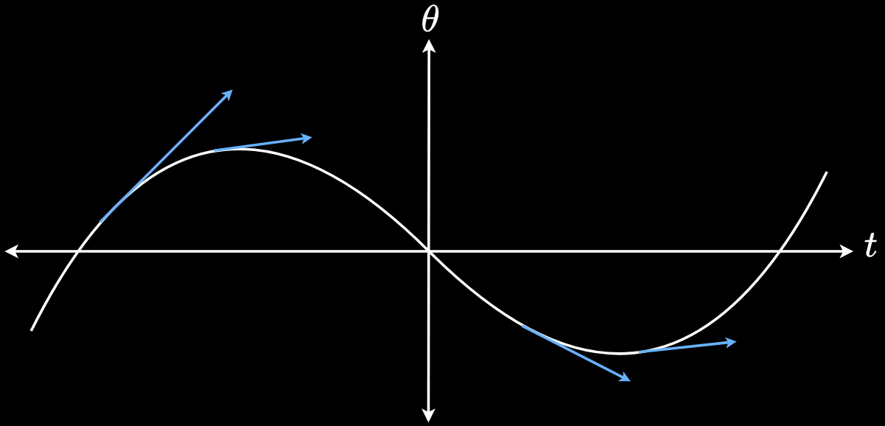

$\ddot{y} > 0$. From a velocity perspective, the curve bends upwards. The tangent line (the "old" slope) keeps going straight (undershoots) while the real solution goes up.
$\ddot{y} < 0$. From a velocity perspective, the curve bends downwards. The tangent line (the "old" slope) keeps going straight (overshoots) while the real solution drops.
The state-space model becomes: $$\begin{align} \label{eq:fEuler} x_{k+1} &= \underbrace{(I + hA)}_{A_f}x_k + \underbrace{hB}_{B_f}u_k \\ y_k &= Cx_k \nonumber \end{align}$$ $y_k, u_k$ are defined in the same manner as the discretised state variable $x_k$.
The discretised state sequence $x_1, x_2...$ is obtained by propagating \ref{eq:fEuler} from the initial condition $x_0$ using the control input sequence $u_0, u_1, u_2,\ldots$.This approach might produce numerical instabilities within the discretised state vector $x_k$ where the state vector might diverge to infinity.